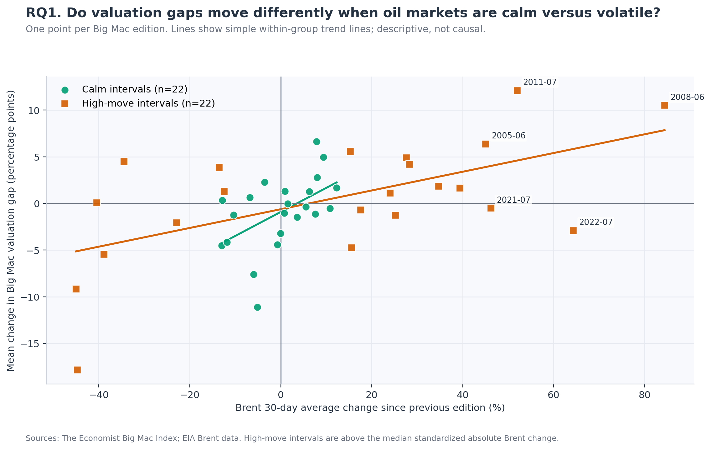
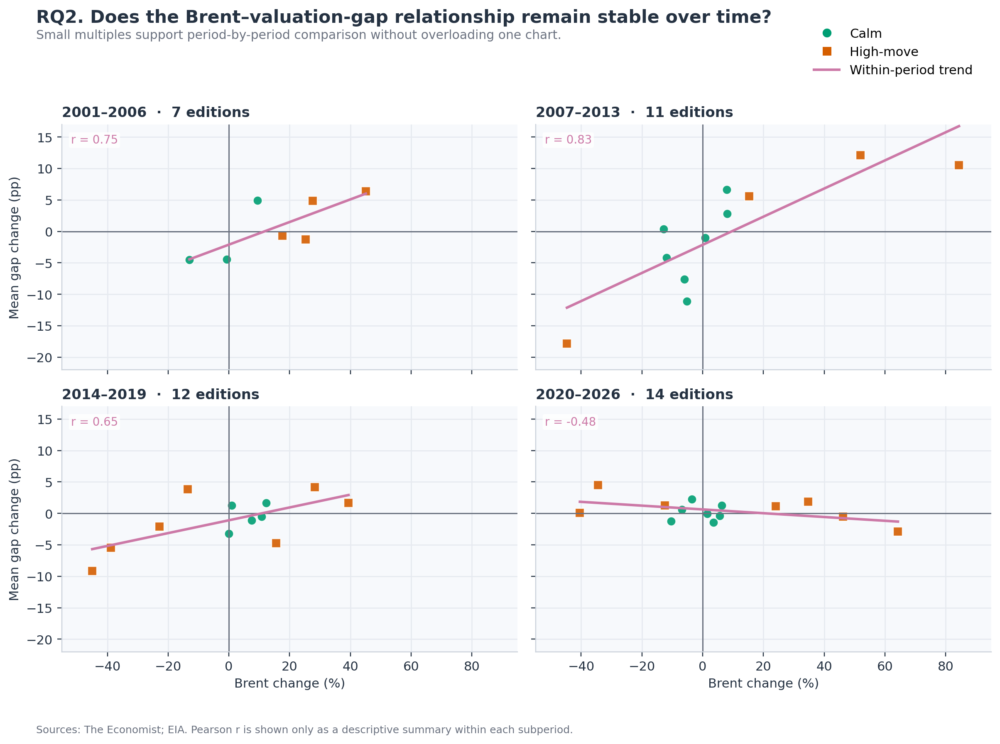

Project Overview
This project investigates the relationship between global oil-price movements and Big Mac Index currency valuation gaps across economies.
The analysis combines The Economist's Big Mac Index, Brent crude oil prices from the U.S. Energy Information Administration (EIA), and oil production and consumption statistics from the Energy Institute.
The merged historical dataset contains 2,011 economy-edition observations and 18 variables. The analysis is exploratory and does not establish causal relationships.
Figure 1 — Oil Prices and Big Mac Valuation Changes

Interpretation
Each point represents one Big Mac publication edition, with valuation-gap changes averaged across economies appearing in consecutive editions.
Calm and high-movement oil-price intervals show different descriptive patterns. The fitted lines summarize associations within each group, but do not establish that oil-price movements caused changes in currency valuation gaps.
Sources: The Economist Big Mac Index and EIA Brent crude oil prices. High-movement intervals are defined using the standardized absolute Brent price change.
Figure 2 — Historical Stability of the Relationship

Interpretation
The visualization compares four historical periods: 2001–2006, 2007–2013, 2014–2019, and 2020–2026.
The first three periods exhibit positive descriptive associations, while the 2020–2026 period shows a negative association in the included dataset. This suggests that the observed relationship is not stable across historical periods.
Shared axes allow direct comparison, although each period contains relatively few publication editions. Correlation estimates may therefore be sensitive to individual observations.
Sources: The Economist Big Mac Index and EIA Brent crude oil prices. Pearson correlations are descriptive and do not establish causation.
Data Sources and Methodology
The Economist provides Big Mac prices and raw USD valuation gaps. EIA provides daily Brent crude oil spot prices measured in US dollars per barrel. The Energy Institute provides historical country-level oil production and consumption statistics.
The datasets are aligned to Big Mac publication dates. Brent prices are summarized using a preceding 30-day average. Annual oil exposure measures are matched using the previous calendar year.
Limitations
Country coverage and publication frequency vary over time. Historical Energy Institute oil statistics include classification assumptions for economies without individually reported production. The separately supplied Energy Institute 2026 PDF covers 2015–2025 and does not independently reproduce the full historical series.
The findings represent statistical associations, not causal effects.